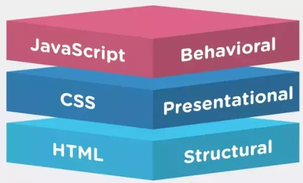

September 11, 2022
To explain the relationship of JavaScript to HTML and CSS in simple terms is that HTML is the structure of the webpage, CSS is what we use to style or beautify the structure and JavaScript is the one responsible for the “action” that happens in the webpage. A simple analogy that I can think of for their relationship is an event . Let’s look at a wedding event for example. It involves the plan, the decorations or activities and its coordinator. The HTML would be the plan, as it will serve as the structure as to how the wedding party will be, then the CSS will be the decorations and activities that will make the event beautiful and memorable. In order for the event to be functioning well on the day, we would need the coordinator to pull all the strings needed to make the event successful. The guests or users if we think of the browser will not enjoy all these if not for the commands and actions done by the coordinator.

Control Flow is how the computer specifies the sequence in which a code executes, usually in a top-down manner, unless the code control changes its course when it meets with other structures. One example is the loops. A loop is a conditional statement that repeats the given task until the given condition is met. Let’s think of baking and icing a birthday cake. We would need to follow instructions on how to bake a cake and we will continue icing it until we reach our desired look on the cake.
blabla

blabla
blabla